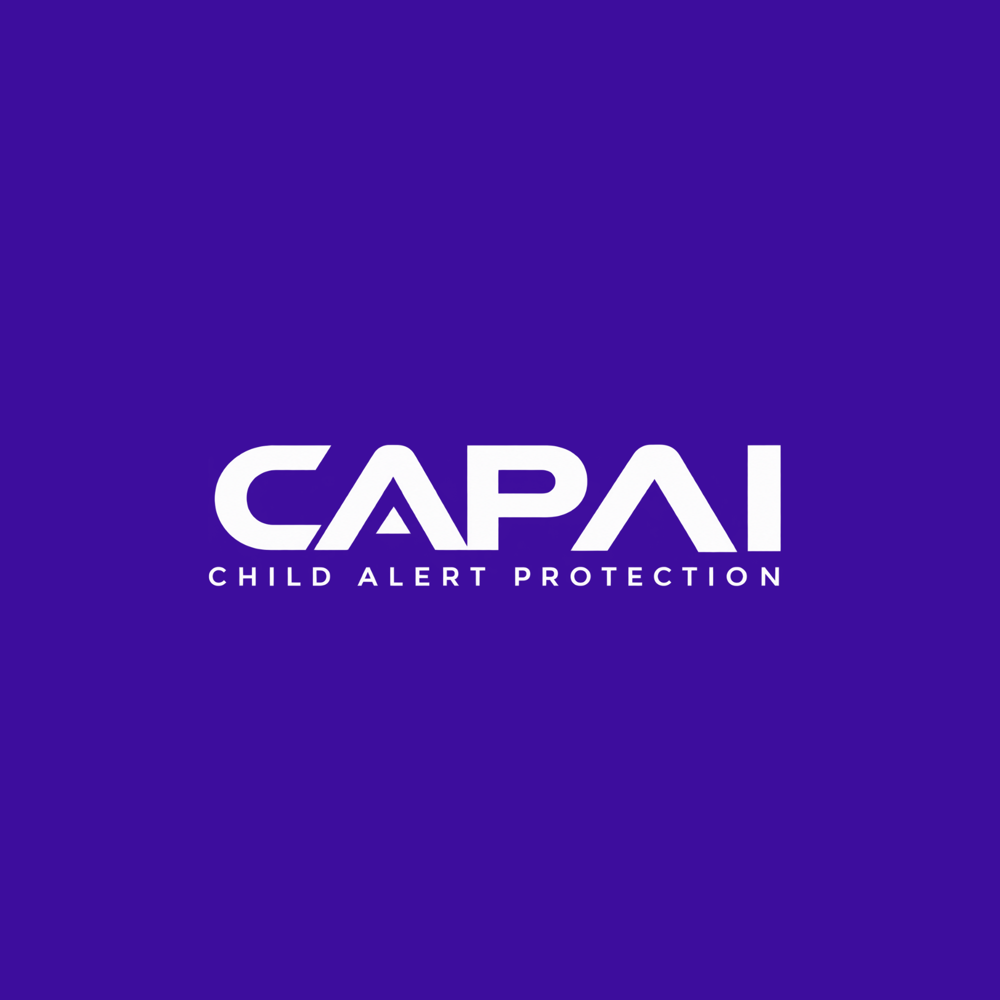

Laboratório de testes · v0.3.0
CAP AI
Experimente a simulação ou use o laboratório com IA após iniciar o servidor no seu computador.
Abrir laboratório com IA
Primeiro execute INICIAR-IA.cmd na pasta do projeto.
Sua privacidade nesta etapa
- Não lê o conteúdo de outros sites.
- Não acessa nem monitora conversas.
- A simulação não envia dados. No laboratório com IA, o texto é enviado à Anthropic somente com sua confirmação.
Use conversas fictícias. A avaliação por IA é experimental e pode errar. Não há bloqueio de contatos reais.